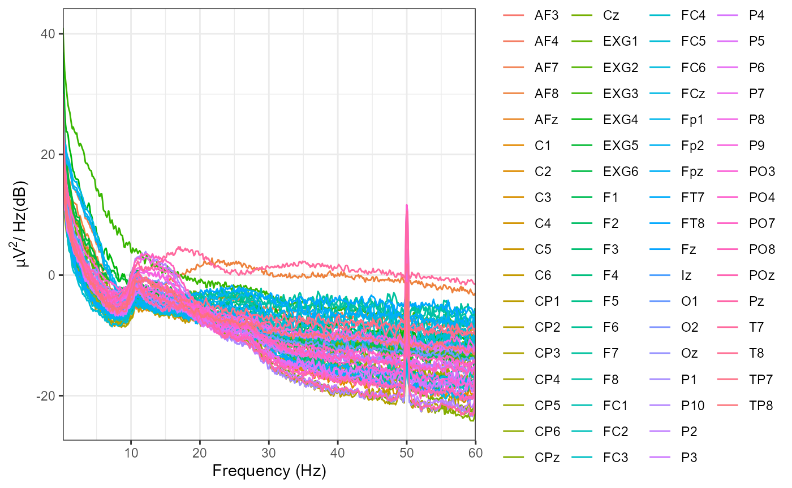
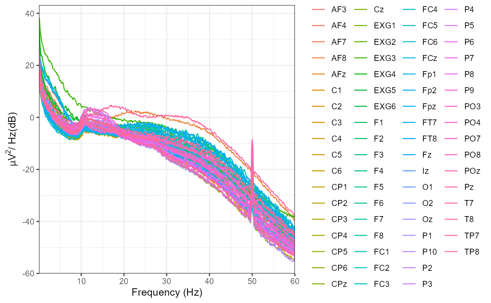
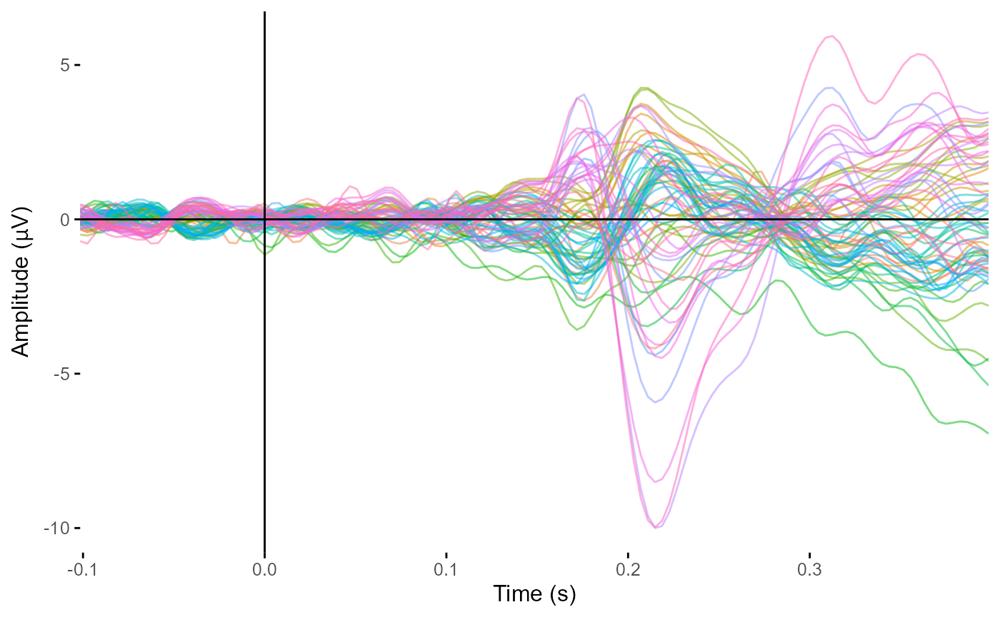
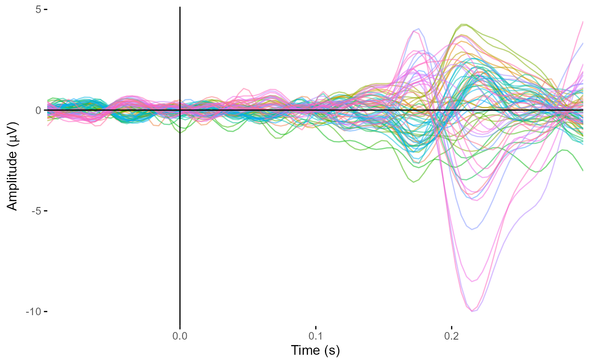
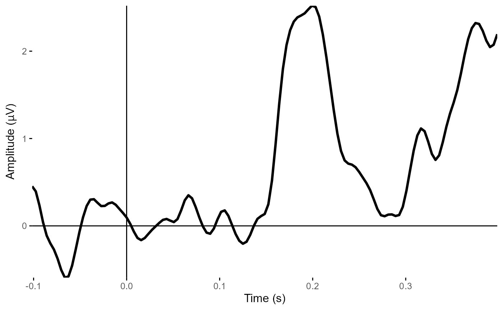
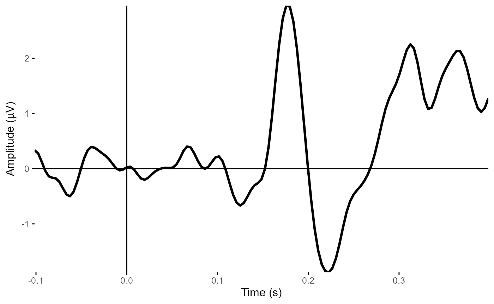
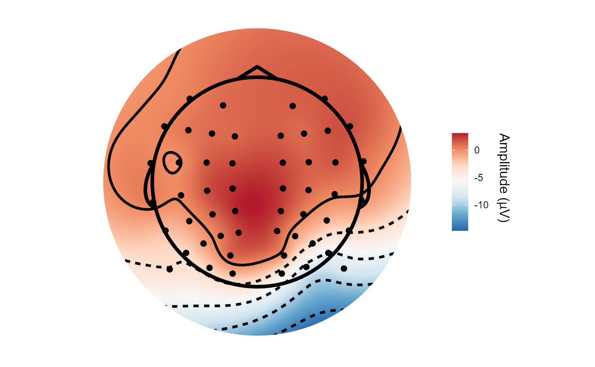
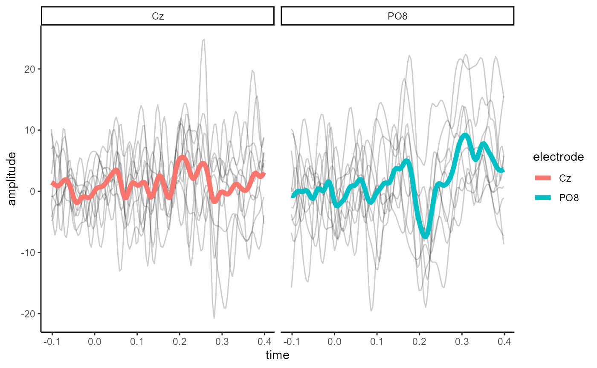
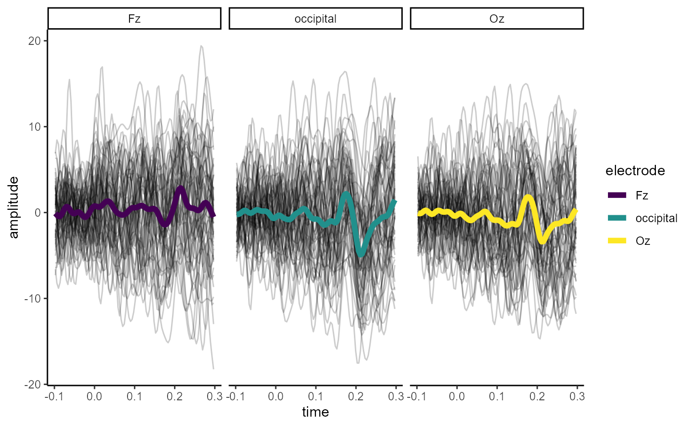

eegUtils is a package for performing basic EEG
preprocessing and plotting of EEG data. Many of these functions are
wrappers around existing R functions to make them behave in consistent
ways and produce output that is more amenable to many of the subsequent
steps in EEG analysis.
The package implements custom objects to contain EEG data and
associated metadata. Some of its functions depend on data being stored
in this format, but part of the philosophy of the package is that any
object stored in the custom eeg_data and associated formats
will always be convertible to a standard data.frame or tibble for
subsequent use in whatever way the user desires. Plotting functions will
typically work on both eeg_data objects and standard
formats, while more complex processing functions will require an
eeg_data or related custom object (such as
eeg_tfr).
There is currently suport for loading raw data in the .BDF (typically
BioSemi), .CNT (32-bit; associated with Neuroscan), and .vhdr/.vmrk/.dat
Brain Vision Analyzer 2.0 file formats using the
import_raw() command. Loading data in these formats results
in an eeg_data object - a structure that contains the raw
data and a variety of metadata.
In this experiment, participants had to covertly attend to either the left or right visual field as indicated by a visual cue (an arrow pointing left or right). Around 1-1.5 seconds after the cue, a target - a Gabor patch - could appear in either the left or right visual field. The task was to determing whether the target patch showed a vertical or a horizontal grating. 80% of the time, the target appeared in the cued location.
You can find the file “Matt-task-spatcue.bdf” on Open Science Framework.
library(eegUtils)
#>
#> Attaching package: 'eegUtils'
#> The following object is masked from 'package:stats':
#>
#> filter
if (!file.exists("Matt-task-spatcue.bdf")) {
temp_dir <- tempdir()
temp_file <- file.path(temp_dir, "Matt-task-spatcue.bdf")
download.file("https://osf.io/hy5wq/download",
temp_file,
mode = "wb")
eeg_example <- import_raw(temp_file)
} else {
eeg_example <- import_raw("Matt-task-spatcue.bdf")
}
#> Importing Matt-task-spatcue.bdf as BDF
eeg_example
#> EEG data
#>
#> Number of channels : 72
#> Electrode names : Fp1 AF7 AF3 F1 F3 F5 F7 FT7 FC5 FC3 FC1 C1 C3 C5 T7 TP7 CP5 CP3 CP1 P1 P3 P5 P7 P9 PO7 PO3 O1 Iz Oz POz Pz CPz Fpz Fp2 AF8 AF4 AFz Fz F2 F4 F6 F8 FT8 FC6 FC4 FC2 FCz Cz C2 C4 C6 T8 TP8 CP6 CP4 CP2 P2 P4 P6 P8 P10 PO8 PO4 O2 EXG1 EXG2 EXG3 EXG4 EXG5 EXG6 EXG7 EXG8
#> Sampling rate : 256 Hz
#> Reference :
#> Signal length: 0 1468.996 secondsThis data was recorded at 1024 Hz (downsampled here already to 256 Hz) using a BioSemi ActiveTwo amplifier and active electrodes. There were 64 electrodes positioned and named according to the 10-05 international system. A few additional electrodes (EXG1-EXG4) placed around the eyes to record eye movements, and two further reference electrodes placed on the left and right mastoids (EXG5 and EXG6). EXG7 and EXG8 are empty channels, with no electrodes attached.
A common first step would be to rereference the data, which can be
done using the eeg_reference() command. By default, if no
electrodes are specified, the data will be referenced to a common
average, calculated from all the electrodes in the data. First we’ll
remove the two empty channels, EXG7 and EXG8, using the
select_elecs() function.
eeg_example <- select_elecs(eeg_example,
electrode = c("EXG7", "EXG8"),
keep = FALSE)
eeg_example <- eeg_reference(eeg_example,
ref_chans = "average")
eeg_example
#> EEG data
#>
#> Number of channels : 70
#> Electrode names : Fp1 AF7 AF3 F1 F3 F5 F7 FT7 FC5 FC3 FC1 C1 C3 C5 T7 TP7 CP5 CP3 CP1 P1 P3 P5 P7 P9 PO7 PO3 O1 Iz Oz POz Pz CPz Fpz Fp2 AF8 AF4 AFz Fz F2 F4 F6 F8 FT8 FC6 FC4 FC2 FCz Cz C2 C4 C6 T8 TP8 CP6 CP4 CP2 P2 P4 P6 P8 P10 PO8 PO4 O2 EXG1 EXG2 EXG3 EXG4 EXG5 EXG6
#> Sampling rate : 256 Hz
#> Reference : average
#> Signal length: 0 1468.996 secondsFiltering can be performed using the eeg_filter()
command. This uses IIR or FIR filters to modify the frequency response
of the signal, removing low or high frequency fluctuations as requested.
For speed, we’ll use “iir” filtering here to perform bandpass filtering
with a high-pass filter at .1 Hz and a low-pass filter at 40 Hz. We’ll
also plot the power spectral density of the data before and after
filtering, using the plot_psd() function.
plot_psd(eeg_example,
freq_range = c(0, 60),
legend = FALSE)
#> Removing channel means...
#> Computing Power Spectral Density using Welch's method.
#> FFT length: 2048
#> Segment length: 2048
#> Overlapping points: 1024 ( 50 %)
eeg_example <- eeg_filter(eeg_example,
method = "iir",
low_freq = .1,
high_freq = 40,
filter_order = 4) # specify a bandpass filter
#> Band-pass IIR filter from 0.1 - 40 Hz
#> Effective filter order: 8 (two-pass)
#> Removing channel means...
plot_psd(eeg_example,
freq_range = c(0, 60),
legend = FALSE)
#> Removing channel means...
#> Computing Power Spectral Density using Welch's method.
#> FFT length: 2048
#> Segment length: 2048
#> Overlapping points: 1024 ( 50 %)
Data can be epoched around events/triggers using
epoch_data(), which outputs an eeg_epochs
object. A list of the event triggers found in the data can be retrieved
using list_events(eeg_example), or more comprehensively,
the events structure can be retrieved using
events(eeg_example). In this case, we’ll epoch around
events 120 and 122. These events correspond to
the onset of a visual target on the left and right of fixation
respectively, for validly cued trials only.
We can specify the length of epochs around the trigger using the
time_lim argument, and label each epoch using
epoch_labels. Here we also specify that the data should be
baseline corrected using the average of the timepoints from -.1s to 0s
(stimulus onset).
list_events(eeg_example)
#> event_type
#> 1 254
#> 2 100
#> 3 60
#> 4 200
#> 5 122
#> 6 20
#> 7 62
#> 8 120
#> 9 25
#> 10 132
#> 11 130
epoched_example <-
epoch_data(
eeg_example,
events = c(120,
122),
epoch_labels = c("valid_left",
"valid_right"),
time_lim = c(-.1, .4),
baseline = c(-.1, 0)
)
#> Adjusting output limits to match sampling rate.
#> Output limits: -0.1015625 0.3984375
#> Baseline: -0.1 - 0s
#> Creating 256 epochs.After epoching, use the epochs() function to check the
meta-information for this data and its epochs.
epochs(epoched_example)
#> # A tibble: 256 × 5
#> epoch participant_id recording event_type epoch_labels
#> <dbl> <lgl> <chr> <dbl> <chr>
#> 1 1 NA Matt-task-spatcue 122 valid_right
#> 2 2 NA Matt-task-spatcue 120 valid_left
#> 3 3 NA Matt-task-spatcue 122 valid_right
#> 4 4 NA Matt-task-spatcue 122 valid_right
#> 5 5 NA Matt-task-spatcue 120 valid_left
#> 6 6 NA Matt-task-spatcue 122 valid_right
#> 7 7 NA Matt-task-spatcue 120 valid_left
#> 8 8 NA Matt-task-spatcue 120 valid_left
#> 9 9 NA Matt-task-spatcue 122 valid_right
#> 10 10 NA Matt-task-spatcue 122 valid_right
#> # … with 246 more rowseeg_epochs can then be plotted using
plot_butterfly() or plot_timecourse(). Both
plot_butterfly() and plot_timecourse() average
over epochs. plot_timecourse() will also average over
electrodes - all electrodes if none are specified, or over any specified
electrodes. Baseline correction can also be applied for plotting only
using the baseline parameter in the plotting call.
plot_butterfly(epoched_example,
legend = FALSE)
#> Creating epochs based on combinations of variables: participant_id epoch_labels
plot_butterfly(epoched_example,
time_lim = c(-.1, .3),
legend = FALSE)
#> Creating epochs based on combinations of variables: participant_id epoch_labels
plot_timecourse(epoched_example,
electrode = "POz") # Plot POz
#> Creating epochs based on combinations of variables: participant_id epoch_labels
plot_timecourse(epoched_example,
electrode = c("POz", "Oz", "O1", "O2")) # average over four occipital electrodes
#> Creating epochs based on combinations of variables: participant_id epoch_labels
Standard channel locations can be added using the
electrode_locations() command. This function supplies
default locations for over 300 typical locations accroding to the 10-05
system. There are several specific montages provided that can be
specified using the montage parameter.
You can inspect the added locations using
channels().
topoplot() can then be used to plot a topographical
representation of selected data. Note that it is not compulsory to use
locations from electrode_locations(); if the data has x and
y columns when it is a data frame, or added to chan_info
element of the eeg_data/eeg_epochs object,
then those will be used.
epoched_example <- electrode_locations(epoched_example,
overwrite = TRUE)
#> Electrodes not found: EXG1 EXG2 EXG3 EXG4 EXG5 EXG6
channels(epoched_example)
#> # A tibble: 70 × 9
#> electrode radius theta phi cart_x cart_y cart_z x y
#> <chr> <dbl> <dbl> <dbl> <dbl> <dbl> <dbl> <dbl> <dbl>
#> 1 Fp1 1 -94 -71 -29.4 83.9 -6.99 -30.6 88.9
#> 2 AF7 1 -97 -51 -54.8 68.6 -10.6 -61.0 75.4
#> 3 AF3 1 -76 -66 -33.7 76.8 21.2 -30.9 69.4
#> 4 F1 1 -46 -64 -27.5 56.9 60.3 -20.2 41.3
#> 5 F3 1 -60 -47 -50.2 53.1 42.2 -40.9 43.9
#> 6 F5 1 -78 -37 -64.5 48.0 16.9 -62.3 46.9
#> 7 F7 1 -98 -31 -70.3 42.5 -11.4 -84 50.5
#> 8 FT7 1 -98 -10 -80.8 14.1 -11.1 -96.5 17.0
#> 9 FC5 1 -73 -14 -77.2 18.6 24.5 -70.8 17.7
#> 10 FC3 1 -49 -21 -60.2 22.7 55.5 -45.8 17.6
#> # … with 60 more rows
topoplot(epoched_example,
time_lim = c(.22, .24))
#> Creating epochs based on combinations of variables: participant_id epoch_labels
#> Using electrode locations from data.
#> Removing channels with no location.
#> Plotting head r 95 mm
At any point, eegUtils objects can be transformed into
data frames for use with functions that don’t natively support them.
library(ggplot2)
library(dplyr)
#>
#> Attaching package: 'dplyr'
#> The following objects are masked from 'package:stats':
#>
#> filter, lag
#> The following objects are masked from 'package:base':
#>
#> intersect, setdiff, setequal, union
epoched_example %>%
select_epochs(epoch_no = 1:10) %>%
select_elecs(c("PO8", "Cz")) %>%
as.data.frame(long = TRUE) %>%
ggplot(aes(x = time, y = amplitude)) +
geom_line(aes(group = epoch), alpha = 0.2) +
stat_summary(fun.y = mean,
geom = "line",
size = 2,
aes(colour = electrode)) +
facet_wrap(~electrode) +
theme_classic()
#> Warning: `fun.y` is deprecated. Use `fun` instead.
In addition, there are overloaded versions of some dplyr
functions that operate on the signals element of
eeg_data and eeg_epochs objects. For example,
select() can be used to choose particular electrodes, and
filter() can be used to filter out epochs or timepoints.
mutate() can be used to add new columns (e.g. creating ROIs
from multiple electrodes).
epoched_example %>%
rm_baseline(time_lim = c(-.1, 0)) %>%
mutate(occipital = (O1 + O2 + Oz) / 3) %>%
select(Oz, Fz, occipital) %>%
filter(epoch <= 60, time < .3, time > -.1) %>%
as.data.frame(long = TRUE) %>%
ggplot(aes(x = time, y = amplitude)) +
geom_line(aes(group = epoch), alpha = 0.2) +
stat_summary(fun = mean,
geom = "line",
size = 2,
aes(colour = electrode)) +
facet_wrap(~electrode) +
scale_colour_viridis_d() +
theme_classic()
#> Baseline: -0.1 - 0s